如果你是俺博客的老读者，并且比较关注翻墙或信息安全，应该已经看过俺的好几篇关于 Tor 的教程。关于“啥是 Tor”，俺这里就不再介绍了。没听说过 Tor 的同学，先去看“这篇博文《戴“套”翻墻的方法》”。
对于 Tor 的大多数用户，应该都用过 Vidalia——这是 Tor 的 GUI 前端图形界面，基于 Qt 开发，能够跨平台使用。俺使用它已经有好些年头了，用得很顺手。
非常遗憾的是，Vidalia 已经【停止开发】了。最主要的征兆是——Tor 官网上已经把它的相关介绍页面移除了。另一个征兆是：某些 Linux 的发行版已经把 Vidalia 从内置的软件仓库中移除。
有鉴于此，俺必须要介绍一下 Vidalia 的替代品——Arm。今天这篇的重点是：如何用 Arm 搭配使用“裸tor”。
因为 Vidalia 死亡之后，Tor 官网上很多基于 Vidalia 的软件包自然也消失了。如今 Tor 官网的下载页面只剩下两种下载选项：“Tor Browser”和“裸 Tor”。“裸 Tor”只有命令行界面（CLI），很难用。这时候 Arm 就派上用场啦。
Arm 是洋文“Anonymizing Relay Monitor”的缩写。它基于 Python 开发的开源项目（GPL v3 or later），可以完成 Vidalia 的大部分功能。
更多关于它的介绍，可以看 Tor 官网的页面（在“这里”）或维基百科（链接在“这里”）。
接下来说说这两者的优缺点对比。
Arm 相比 Vidalia 的优点在于：
1. 支持纯命令行的仿真图形界面（用字符方式仿真窗口和菜单），可以在【纯文本终端】上使用。
2. 非常轻量级——本身的源代码压缩包不到 300kb
3. 如果只用它的命令行方式，【无须】依赖 GTK 或 Qt 之类的运行库（相比之下，Vidalia 需要 Qt）
4. 提供一个高级的交互模式，可以直接跟运行中的 TOR 客户端进行交互（面向那些非常熟悉 Tor 的高级用户）
5. 同时也支持图形模式（需要依赖 GTK 和 python 的某个第三方图表库）
虽然 Arm 也支持 GUI 图形窗口界面，不过俺一直在命令行界面下使用（因为功能已经够用）
目前 Arm 最大的问题在于“不支持 Windows”。俺在 Windows 下尝试进行安装，python 报了一堆错误。粗略看了一下，它的代码太依赖于 POSIX 环境，比较难移植到 Windows 下。
如果你只使用 Windows，并且将来也不考虑用 Linux 或 BSD，那你就不用再浪费时间看本文的后续部分了。
如果你考虑今后切换到 Linux，可以先看俺之前的两篇博文：
《扫盲 Linux：新手如何搞定 Linux 操作系统》
《扫盲 Linux：如何选择发行版》
另有几个小缺点：
1. 界面美观程度不及 Vidalia（比如实时流量的界面，就没有 Vidalia 那么清晰流畅）
2. 缺少类似 Vidalia 那样的“世界地图”展示界面
因为 Arm 是基于 Python 开发的，所以你的系统中需要事先准备好 Python 环境（并且得是 python2）。
假如你是通过 Linux 发行版的软件仓库安装 Arm，软件包管理器会自动帮你把 Python2 安装好。如果你是自己去 Arm 官网下载 Arm 来安装，你自己要确保系统中已经装有 python2（版本最好是 2.7.x）。
主流的几个 Linux 发行版，已经把 Arm 内置到发行版的软件仓库中。如果你使用的是如下的发行版，应该可以直接安装，无需去 Arm 官网下载。
软件仓库内置 Arm 的 Linux 发行版至少包括：
提醒一下：
某些发行版中，软件包的名称是“arm”；还有些发行版中，软件包的名称是“tor-arm”
如果你使用的发行版，软件仓库没有内置 Arm，那就得去 Arm 官网下载（下载页面在“这里”）。
安装完成之后，下面就是具体的使用教程。
开一个命令行终端，运行“arm 回车”，即把它启动起来了。
第一次启动的时候，Arm 会显示一个“配置向导”，问你打算要如何使用 Tor（以下是相关截屏）
向导第1步
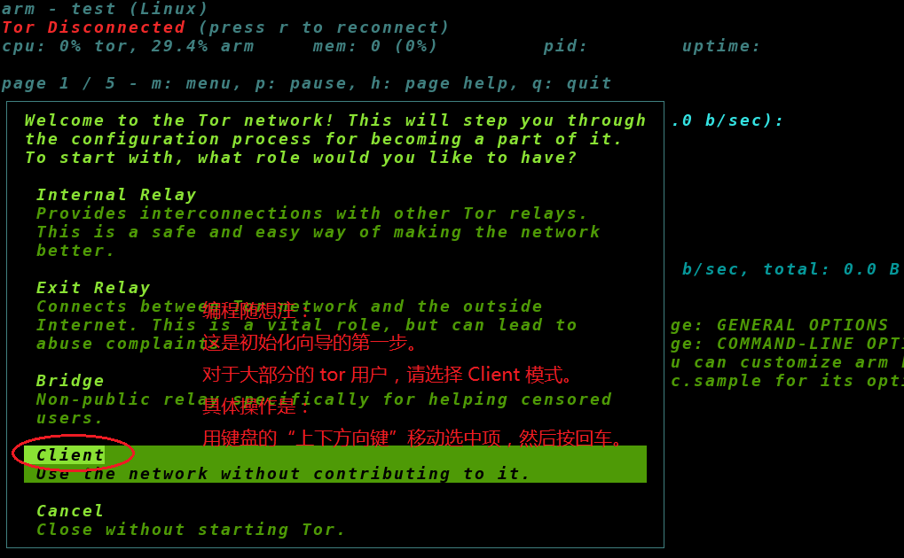 对于普通的网友，只需选下面的那个 client（如图所示）。
向导第2步
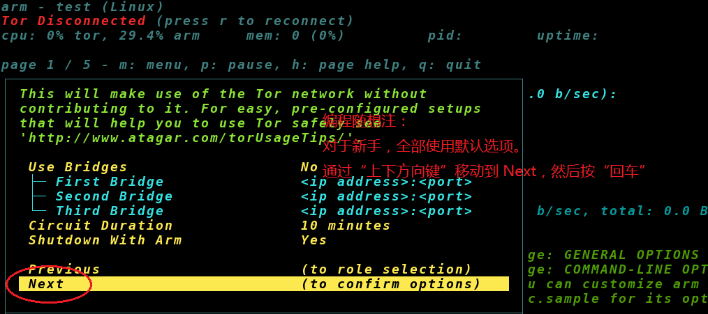 对于天朝之内的网友，Tor 的“网桥模式”已经失效。所以你没有必要再去配置网桥（Bridge）。
这步没啥需要配的，直接 Next
向导第3步
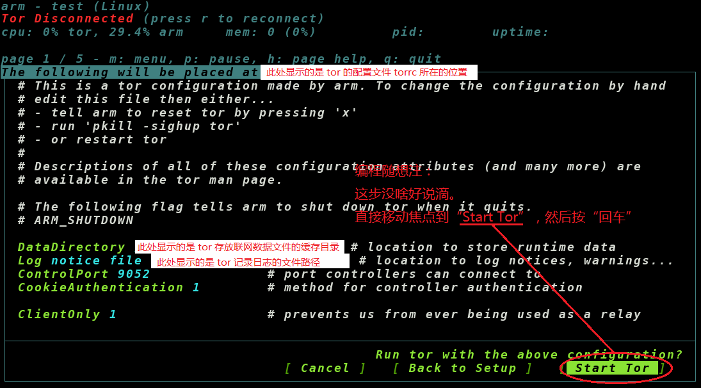 在这一步，会把 Arm 默认生成的
看完之后，把焦点移动到“Start Tor”，然后敲回车。
首次启动好 Tor 之后，Arm 会显示它的主界面，包含5个标签页（page）。你可以用键盘的“左右方向键”来回切换不同的标签页。
以下是5个标签页的截屏（俺把说明文字直接写在截屏中）
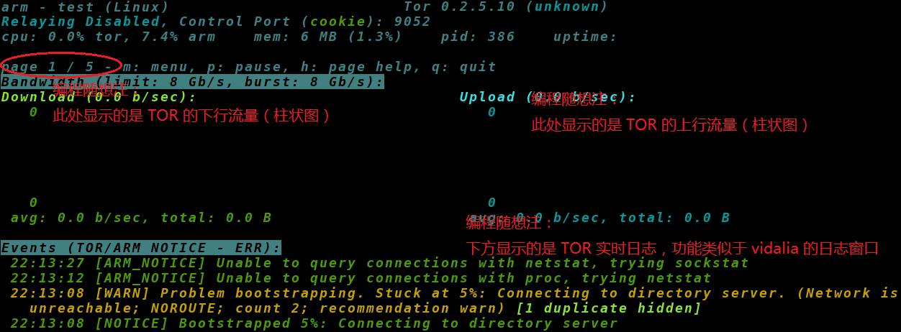
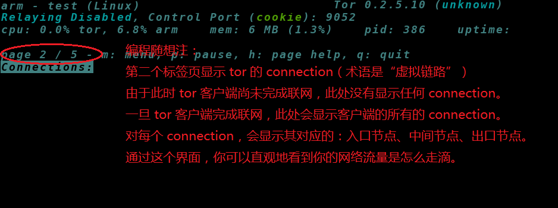
对“第2个标签页”，俺重点表扬一下。
此界面是 Arm 做得比 Vidalia 更直观之处。通过此界面可以方便地看到：
1. 前置代理的 IP（如果没有设置前置代理，界面上的发起方就是你自己的公网 IP）
2. “正在创建的链路”和“已经创建完的链路”
3. 对已经创建完的链路，可以看到其包含的3个节点的 IP / 节点名 / 国别
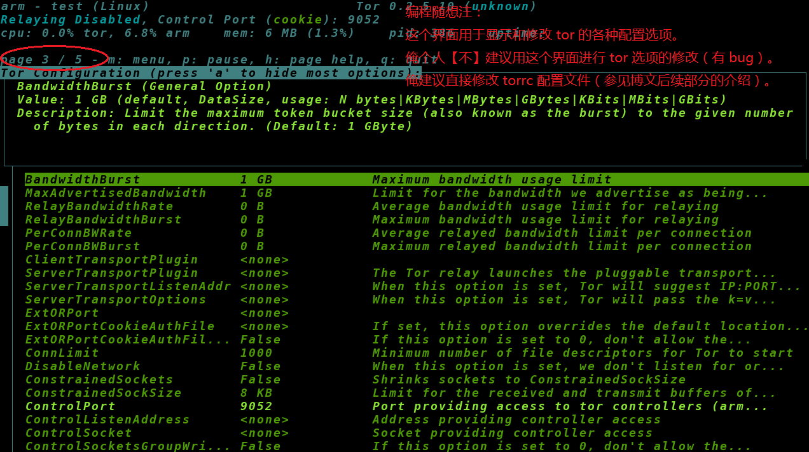
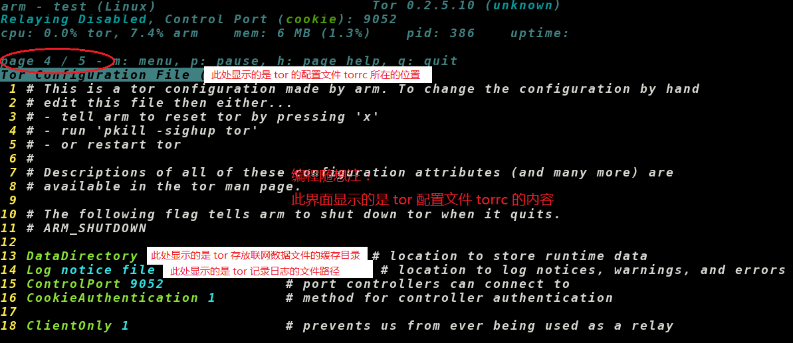
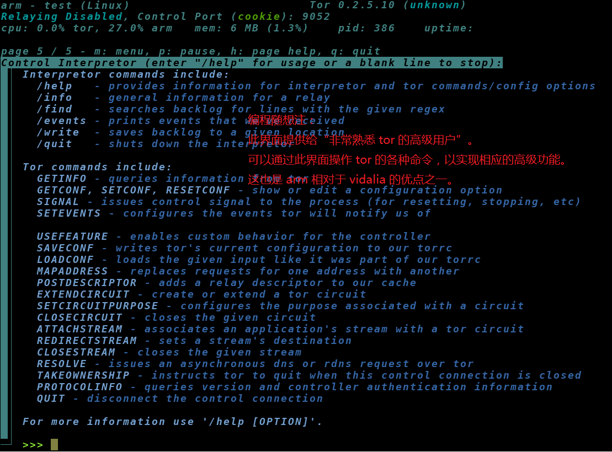
在 Arm 界面上按 m 键，就会显示 Arm 的菜单。然后你可以用“上下左右”4个方向键移动菜单的焦点，然后按“回车键”点击处于焦点的菜单项。如果不想选中任何菜单项，直接按“Esc 键”关闭菜单（连续按两下）。
菜单的截屏如下。
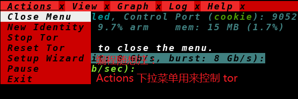
在第一个下拉菜单中，你可以看到“Start Tor”或“Stop Tor”的菜单项，这就是用来启动/停止 Tor 的。还有一个“New Identity”可以用来切换 Tor 的线路。最下面的“Exit”是用来退出 Arm 的。如果你不喜欢点菜单，可以直接按键盘的 q 键（连续按两下）。
你用“左右键”可以打开另外几个下拉菜单。俺分别截图如下，给大伙儿一个感性的印象。
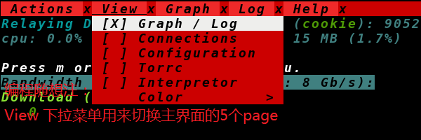
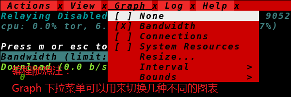
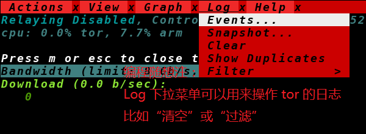
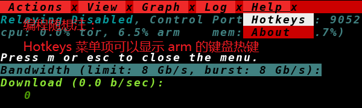
如果你位于墙内，“裸 Tor”是无法独立联网的。因此，你需要为 Tor 设置“前置代理”，组合成俺经常唠叨的“双重代理”。关于“双重代理”的原理和优点，之前已经写过专门的博文（请看“这个系列”的其中一篇）。关于这方面的内容，本文就不再重复罗嗦了。今天重点说一下如何修改 Tor 的配置文件。
虽然 Arm 的界面上提供了对 Tor 的配置选项的修改，但是那个界面很难用。而且有时候修改了还没法保存（原因未知，疑似 Bug）。所以，俺强烈建议大伙儿直接手动修改 Tor 的配置文件。
如果你的 Tor 是被 Arm 启起来的，arm 会在
1.
先把 Arm 和 Tor 都停掉（通过 Arm 菜单中的“Exit”）
2.
用你喜欢的文本编辑器打开
3.
如果你的前置代理提供的是 HTTPS 代理，在该文件尾部加入如下一行（把 x.x.x.x 替换为前置代理的 IP，把 xx 替换为代理的端口）
重新启动 Arm，这时候它会用洋文问你“是否使用上次保存的配置”，你【必须选择这个选项】。
当你把前置代理配置好，重新运行 Arm，这时候 Tor 就会通过前置代理联网。当 Tor 客户端完成联网，在 Arm 的第一个标签页上，就可以看到 Tor 的流量（截图如下）
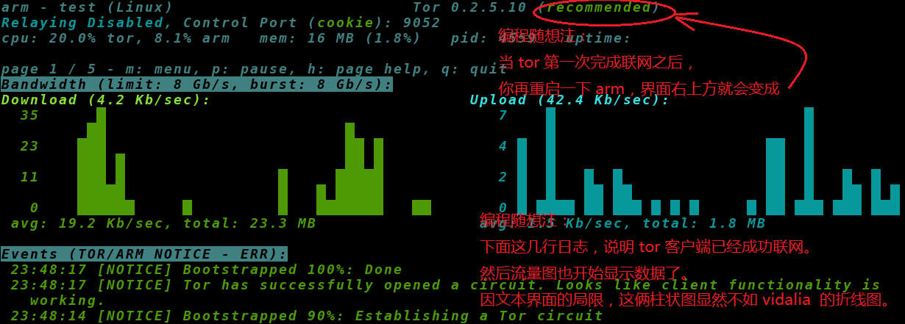
然后你的浏览器就可以通过 tor 提供的 socks 代理匿名冲浪啦 :)
为了保险起见，用浏览器访问 Tor 官网的 check 页面（链接在“这里”），确保你的浏览器已经走 Tor 的线路。
除了“设置前置代理”，还有其它一些配置选项，大伙儿也可以考虑。
比如你很注重安全性，那么就要考虑：在 torrc 中把一些流氓国家的 Tor 节点排除掉（以防误入“蜜罐节点”）。
比如你想把自己的“公网IP”伪装成某个特定的国家，也可以在 torrc 中限定“出口节点”的国别。
......
诸如此类的配置选项还有很多，大伙儿可以参考俺之前写的另一篇博文《关于 Tor 的常见问题解答》。
Arm 本身也提供了配置功能。其配置文件的示例位于：
用文本编辑器打开这个示例文件，基本上能看明白各个选项是啥意思。
要定制 Arm 的配置选项，先把这个示例文件复制到
修改完这个配置文件之后，使用如下命令启动 Arm
关于 Arm 的使用，如果你碰到啥困难或问题，可以到本文留言。
如今俺博客的评论区很活跃。即使俺没来得及回复，也会有其他热心网友帮你解答。
俺博客上，和本文相关的帖子（需翻墙）：
《“如何翻墙”系列：关于 Tor 的常见问题解答》
《“如何翻墙”系列：戴“套”翻墻的方法》
《“如何翻墙”系列：扫盲 Tor Browser 7.5——关于 meek 插件的配置、优化、原理》
《“如何翻墙”系列：Tor 已复活——meek 流量混淆插件的安装、优化、原理》
《如何翻墙？》
《多台电脑如何【共享】翻墙通道——兼谈【端口转发】的几种方法》
《如何让【不支持】代理的网络软件，通过代理进行联网（不同平台的 N 种方法）》
《如何隐藏你的踪迹，避免跨省追捕》（系列）
《扫盲 Linux＆UNIX 命令行——从“电传打字机”聊到“shell 脚本编程”》
对于 Tor 的大多数用户，应该都用过 Vidalia——这是 Tor 的 GUI 前端图形界面，基于 Qt 开发，能够跨平台使用。俺使用它已经有好些年头了，用得很顺手。
非常遗憾的是，Vidalia 已经【停止开发】了。最主要的征兆是——Tor 官网上已经把它的相关介绍页面移除了。另一个征兆是：某些 Linux 的发行版已经把 Vidalia 从内置的软件仓库中移除。
有鉴于此，俺必须要介绍一下 Vidalia 的替代品——Arm。今天这篇的重点是：如何用 Arm 搭配使用“裸tor”。
因为 Vidalia 死亡之后，Tor 官网上很多基于 Vidalia 的软件包自然也消失了。如今 Tor 官网的下载页面只剩下两种下载选项：“Tor Browser”和“裸 Tor”。“裸 Tor”只有命令行界面（CLI），很难用。这时候 Arm 就派上用场啦。
★Arm 是啥？
Arm 是洋文“Anonymizing Relay Monitor”的缩写。它基于 Python 开发的开源项目（GPL v3 or later），可以完成 Vidalia 的大部分功能。
更多关于它的介绍，可以看 Tor 官网的页面（在“这里”）或维基百科（链接在“这里”）。
★Arm VS Vidalia
接下来说说这两者的优缺点对比。
◇优点
Arm 相比 Vidalia 的优点在于：
1. 支持纯命令行的仿真图形界面（用字符方式仿真窗口和菜单），可以在【纯文本终端】上使用。
2. 非常轻量级——本身的源代码压缩包不到 300kb
3. 如果只用它的命令行方式，【无须】依赖 GTK 或 Qt 之类的运行库（相比之下，Vidalia 需要 Qt）
4. 提供一个高级的交互模式，可以直接跟运行中的 TOR 客户端进行交互（面向那些非常熟悉 Tor 的高级用户）
5. 同时也支持图形模式（需要依赖 GTK 和 python 的某个第三方图表库）
虽然 Arm 也支持 GUI 图形窗口界面，不过俺一直在命令行界面下使用（因为功能已经够用）
◇缺点
目前 Arm 最大的问题在于“不支持 Windows”。俺在 Windows 下尝试进行安装，python 报了一堆错误。粗略看了一下，它的代码太依赖于 POSIX 环境，比较难移植到 Windows 下。
如果你只使用 Windows，并且将来也不考虑用 Linux 或 BSD，那你就不用再浪费时间看本文的后续部分了。
如果你考虑今后切换到 Linux，可以先看俺之前的两篇博文：
《扫盲 Linux：新手如何搞定 Linux 操作系统》
《扫盲 Linux：如何选择发行版》
另有几个小缺点：
1. 界面美观程度不及 Vidalia（比如实时流量的界面，就没有 Vidalia 那么清晰流畅）
2. 缺少类似 Vidalia 那样的“世界地图”展示界面
★如何安装？
◇Python 环境
因为 Arm 是基于 Python 开发的，所以你的系统中需要事先准备好 Python 环境（并且得是 python2）。
假如你是通过 Linux 发行版的软件仓库安装 Arm，软件包管理器会自动帮你把 Python2 安装好。如果你是自己去 Arm 官网下载 Arm 来安装，你自己要确保系统中已经装有 python2（版本最好是 2.7.x）。
◇从 Linux 发行版的软件仓库安装
主流的几个 Linux 发行版，已经把 Arm 内置到发行版的软件仓库中。如果你使用的是如下的发行版，应该可以直接安装，无需去 Arm 官网下载。
软件仓库内置 Arm 的 Linux 发行版至少包括：
Debian（另外，FreeBSD 的软件仓库也内置了 Arm 了）
Arch
Gentoo
Slackware
提醒一下：
某些发行版中，软件包的名称是“arm”；还有些发行版中，软件包的名称是“tor-arm”
◇去 Arm 官网下载
如果你使用的发行版，软件仓库没有内置 Arm，那就得去 Arm 官网下载（下载页面在“这里”）。
★如何使用？
安装完成之后，下面就是具体的使用教程。
◇首次启动 Arm 的配置向导
开一个命令行终端，运行“arm 回车”，即把它启动起来了。
第一次启动的时候，Arm 会显示一个“配置向导”，问你打算要如何使用 Tor（以下是相关截屏）
向导第1步
向导第2步
这步没啥需要配的，直接 Next
向导第3步
torrc 文件的内容显示给你看（此文件是 tor 的配置文件）。看完之后，把焦点移动到“Start Tor”，然后敲回车。
◇Arm 界面的5个标签页（page）
首次启动好 Tor 之后，Arm 会显示它的主界面，包含5个标签页（page）。你可以用键盘的“左右方向键”来回切换不同的标签页。
以下是5个标签页的截屏（俺把说明文字直接写在截屏中）
对“第2个标签页”，俺重点表扬一下。
此界面是 Arm 做得比 Vidalia 更直观之处。通过此界面可以方便地看到：
1. 前置代理的 IP（如果没有设置前置代理，界面上的发起方就是你自己的公网 IP）
2. “正在创建的链路”和“已经创建完的链路”
3. 对已经创建完的链路，可以看到其包含的3个节点的 IP / 节点名 / 国别
◇Arm 界面的菜单
在 Arm 界面上按 m 键，就会显示 Arm 的菜单。然后你可以用“上下左右”4个方向键移动菜单的焦点，然后按“回车键”点击处于焦点的菜单项。如果不想选中任何菜单项，直接按“Esc 键”关闭菜单（连续按两下）。
菜单的截屏如下。
在第一个下拉菜单中，你可以看到“Start Tor”或“Stop Tor”的菜单项，这就是用来启动/停止 Tor 的。还有一个“New Identity”可以用来切换 Tor 的线路。最下面的“Exit”是用来退出 Arm 的。如果你不喜欢点菜单，可以直接按键盘的 q 键（连续按两下）。
你用“左右键”可以打开另外几个下拉菜单。俺分别截图如下，给大伙儿一个感性的印象。
★Tor 的配置
◇增加“前置代理”
如果你位于墙内，“裸 Tor”是无法独立联网的。因此，你需要为 Tor 设置“前置代理”，组合成俺经常唠叨的“双重代理”。关于“双重代理”的原理和优点，之前已经写过专门的博文（请看“这个系列”的其中一篇）。关于这方面的内容，本文就不再重复罗嗦了。今天重点说一下如何修改 Tor 的配置文件。
虽然 Arm 的界面上提供了对 Tor 的配置选项的修改，但是那个界面很难用。而且有时候修改了还没法保存（原因未知，疑似 Bug）。所以，俺强烈建议大伙儿直接手动修改 Tor 的配置文件。
如果你的 Tor 是被 Arm 启起来的，arm 会在
~/.arm/torrc 生成 Tor 的默认配置文件。你只需修改这个文件，加入前置代理的配置信息。具体步骤如下：1.
先把 Arm 和 Tor 都停掉（通过 Arm 菜单中的“Exit”）
2.
用你喜欢的文本编辑器打开
~/.arm/torrc3.
如果你的前置代理提供的是 HTTPS 代理，在该文件尾部加入如下一行（把 x.x.x.x 替换为前置代理的 IP，把 xx 替换为代理的端口）
HTTPSProxy x.x.x.x:xx如果你的前置代理提供的是 SOCKS 代理，在该文件尾部加入如下一行（SOCKS 代理有两种协议，分别是 SOCKS4 和 SOCKS5，别搞错喽）
Socks4Proxy x.x.x.x:xx或
Socks5Proxy x.x.x.x:xx4.
重新启动 Arm，这时候它会用洋文问你“是否使用上次保存的配置”，你【必须选择这个选项】。
当你把前置代理配置好，重新运行 Arm，这时候 Tor 就会通过前置代理联网。当 Tor 客户端完成联网，在 Arm 的第一个标签页上，就可以看到 Tor 的流量（截图如下）
然后你的浏览器就可以通过 tor 提供的 socks 代理匿名冲浪啦 :)
为了保险起见，用浏览器访问 Tor 官网的 check 页面（链接在“这里”），确保你的浏览器已经走 Tor 的线路。
◇其它配置选项
除了“设置前置代理”，还有其它一些配置选项，大伙儿也可以考虑。
比如你很注重安全性，那么就要考虑：在 torrc 中把一些流氓国家的 Tor 节点排除掉（以防误入“蜜罐节点”）。
比如你想把自己的“公网IP”伪装成某个特定的国家，也可以在 torrc 中限定“出口节点”的国别。
......
诸如此类的配置选项还有很多，大伙儿可以参考俺之前写的另一篇博文《关于 Tor 的常见问题解答》。
★Arm 的配置
Arm 本身也提供了配置功能。其配置文件的示例位于：
/usr/share/doc/arm/armrc.sample用文本编辑器打开这个示例文件，基本上能看明白各个选项是啥意思。
要定制 Arm 的配置选项，先把这个示例文件复制到
~/.arm/armrc 进行修改。修改完这个配置文件之后，使用如下命令启动 Arm
arm -c ~/.arm/armrc
★结尾
关于 Arm 的使用，如果你碰到啥困难或问题，可以到本文留言。
如今俺博客的评论区很活跃。即使俺没来得及回复，也会有其他热心网友帮你解答。
俺博客上，和本文相关的帖子（需翻墙）：
《“如何翻墙”系列：关于 Tor 的常见问题解答》
《“如何翻墙”系列：戴“套”翻墻的方法》
《“如何翻墙”系列：扫盲 Tor Browser 7.5——关于 meek 插件的配置、优化、原理》
《“如何翻墙”系列：Tor 已复活——meek 流量混淆插件的安装、优化、原理》
《如何翻墙？》
《多台电脑如何【共享】翻墙通道——兼谈【端口转发】的几种方法》
《如何让【不支持】代理的网络软件，通过代理进行联网（不同平台的 N 种方法）》
《如何隐藏你的踪迹，避免跨省追捕》（系列）
《扫盲 Linux＆UNIX 命令行——从“电传打字机”聊到“shell 脚本编程”》
版权声明
本博客所有的原创文章，作者皆保留版权。转载必须包含本声明，保持本文完整，并以超链接形式注明作者编程随想和本文原始地址：
https://program-think.blogspot.com/2015/03/Tor-Arm.html
本博客所有的原创文章，作者皆保留版权。转载必须包含本声明，保持本文完整，并以超链接形式注明作者编程随想和本文原始地址：
https://program-think.blogspot.com/2015/03/Tor-Arm.html